EE. UU.
EE. UU.
La ruta de EE. UU.: 3 regiones, 12 monumentos. Cada monumento se construye en tres fases.
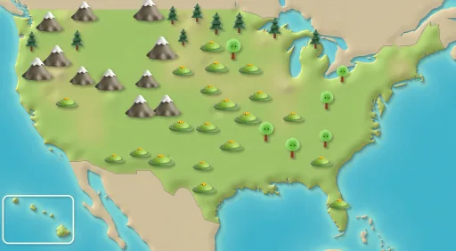
Nueva York
Pasos de ruta 1–12
Estatua de la Libertad
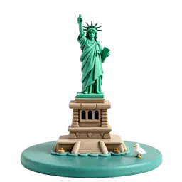
Fase 1 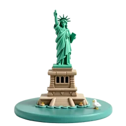
Fase 2 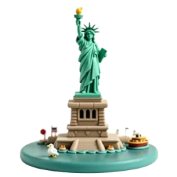
Fase 3 Regalo de Francia en 1886, la estatua era al principio de color cobre brillante. Con el aire, el cobre se volvió verde. Fuente: Wikipedia
Edificio Empire State
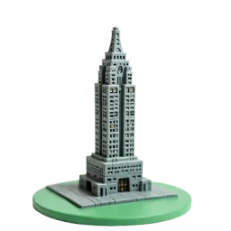
Fase 1 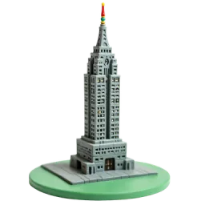
Fase 2 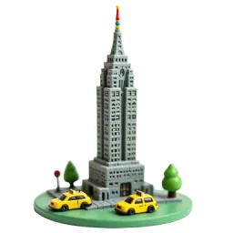
Fase 3 El edificio de 102 pisos se construyó entre 1930 y 1931 y fue el más alto del mundo durante casi 40 años. Fuente: Wikipedia
Puente de Brooklyn
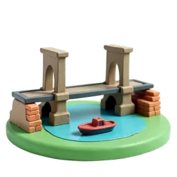
Fase 1 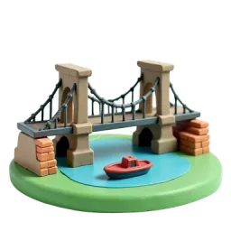
Fase 2 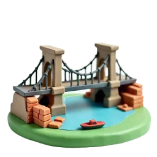
Fase 3 Inaugurado el 24 de mayo de 1883, fue el primer cruce fijo sobre el East River. Cuelga de cables de alambre de acero. Fuente: Wikipedia
Central Park
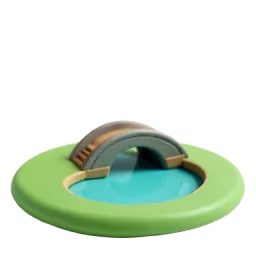
Fase 1 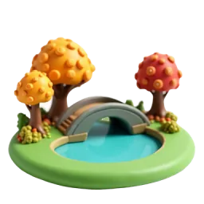
Fase 2 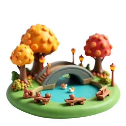
Fase 3 Central Park mide 341 hectáreas. Es el parque urbano más visitado de EE. UU., con 42 millones de visitas en 2016. Fuente: Wikipedia
Washington D. C.
Pasos de ruta 13–24
Monumento a Lincoln
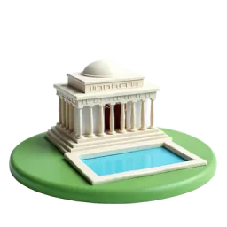
Fase 1 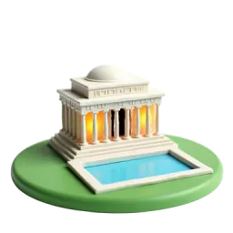
Fase 2 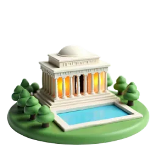
Fase 3 El monumento está rodeado por 36 columnas, una por cada uno de los 36 estados del país cuando murió Lincoln. Fuente: Wikipedia
Monumento a Washington
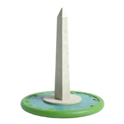
Fase 1 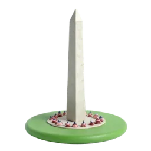
Fase 2 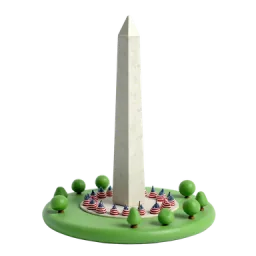
Fase 3 Este obelisco de 169 metros fue la estructura más alta del mundo de 1884 a 1889, hasta que lo superó la Torre Eiffel. Fuente: Wikipedia
Monumento a Jefferson
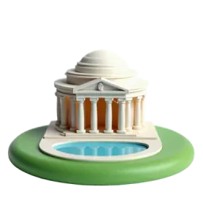
Fase 1 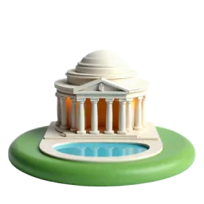
Fase 2 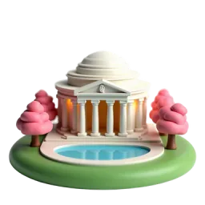
Fase 3 Construido entre 1939 y 1943, se inspiró en el Panteón de Roma. Su estatua de bronce de Jefferson se añadió en 1947. Fuente: Wikipedia
Cerezos del Tidal Basin
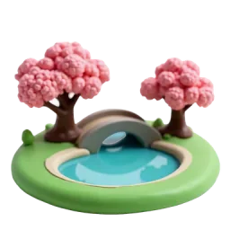
Fase 1 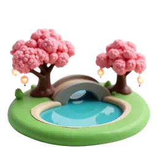
Fase 2 Fase 3 Los primeros 3020 cerezos de aquí fueron un regalo de la ciudad de Tokio a Washington en 1912. Fuente: Wikipedia
Maravillas naturales
Pasos de ruta 25–36
Cataratas del Niágara
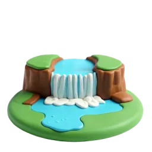
Fase 1 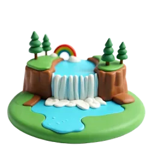
Fase 2 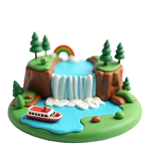
Fase 3 Las cataratas del Niágara son en realidad tres. La mayor, la Herradura, está justo en la frontera entre EE. UU. y Canadá. Fuente: Wikipedia
Géiser de Yellowstone
Fase 1 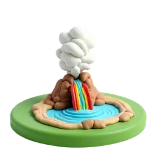
Fase 2 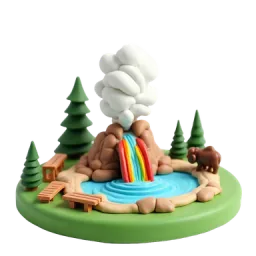
Fase 3 El géiser Old Faithful de Yellowstone es muy puntual: entra en erupción cada 92 minutos de media. Fuente: Wikipedia
Half Dome de Yosemite
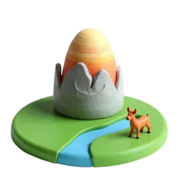
Fase 1 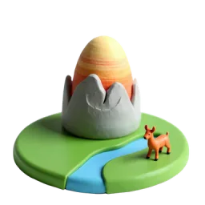
Fase 2 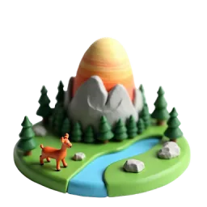
Fase 3 Half Dome supera los 2680 metros sobre el nivel del mar. El último tramo se sube agarrándose a dos cables de acero. Fuente: Wikipedia
Secuoyas gigantes
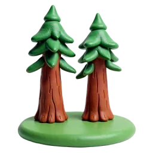
Fase 1 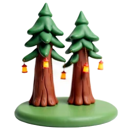
Fase 2 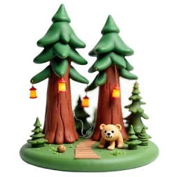
Fase 3 La secuoya gigante llamada General Sherman es el árbol más grande conocido por volumen. Mide unos 84 metros. Fuente: Wikipedia